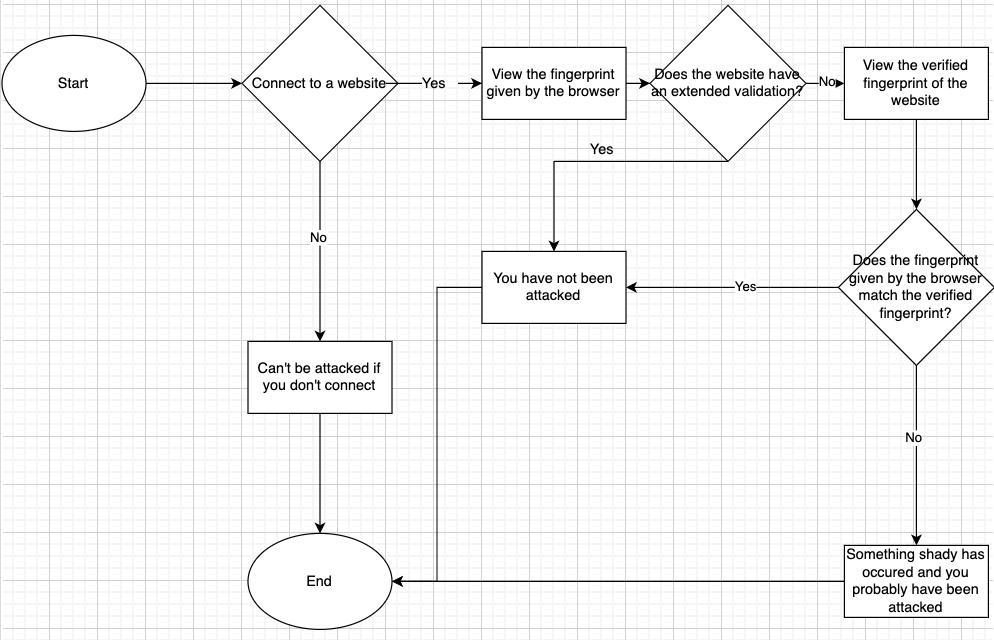

Allen High School STEAM Center
Advanced Computer Science III
Mr. Ben-Yaakov
August 25, 2022
The two primary purposes of a secure, HTTPS connection are security and privacy. A secure HTTPS connection accomplishes security through a remote website authenticating itself by presenting a certificate of their identity that has been signed by a higher authority that is trusted by the browser (Gibson, 2020). Privacy is achieved through encrypting information sent which nobody can break. An HTTPS Proxy Appliance is an appliance which subverts privacy through an addition of a “Pseudo Certificate Authority(PCA)” to user’s computers or browsers (Gibson, 2020). The HTTPS Proxy Appliance then intercepts any connection made before creating a spoofed web server certificate to impersonate the intended website and then authenticates itself using the PCA (Gibson, 2020). MITM is a Man-in-the-Middle Attack in which the attacker intercepts and relays messages between the user and server who believe they are communicating with each other (Yasar & Cobb, 2022). These present the risk of private information being leaked to the attacker, including but not limited to banking accounts, credit card numbers, social security numbers, passports, identity cards, and medical records. A hash is a complex mathematical algorithm which has dramatically different outputs if the inputs are even a single bit off (Gibson, 2020). The essential qualities which make a good hash include processing every bit of information of what has been input and generating extremely different hash values for similar inputs. A “certificate authorities” (CA) are those who judge which websites prove their authenticity and identity in the real world through documentation such as phone numbers (Gibson, 2020). The CA will then digitally sign a website’s security certificate after sufficient evidence has been provided. CA’s play a vital role in verifying which websites are what they say they are, and not an impersonator of the true website (Gibson, 2020). SSL interception cannot be prevented, however it can be detected. SSL interception can be detected through fingerprints of SSL certificates via hashing (Gibson, 2020). Due to SSL-intercepting proxy appliances not having the private key to a website, they are forced to use a spoofed different public key where they do have the private key. The fake key’s hash will not be the same as the real key’s hash, and the fingerprints can be easily accessible (Gibson, 2020). This completely reveals the SSL-intercepting proxy appliance. A false-positive is when fingerprints could lead users to believe that their connections were intercepted when in actuality they weren’t. An example of this would be a company with many security certificates comparing certificate fingerprints which would end up being drastically different leading the users to believe their connection was intercepted. A false-negative is when fingerprints could lead users to believe that their connections were not intercepted when in actuality they were. My school, government, and ISP all have a right legally to eavesdrop on my communications. However, I personally believe that this is a breach of privacy and a security issue considering how often large data leaks occur which puts many individuals at risk.
Gibson, S. (2020). Fingerprints. GIBSON RESEARCH CORPORATION. Retrieved August 25, 2022, from https://www.grc.com/fingerprints.htm#top
Yasar, K., & Cobb, M. (2022, April 28). What is a man-in-the-Middle Attack (MITM)? IoT Agenda. Retrieved August 25, 2022, from https://www.techtarget.com/iotagenda/definition/man-in-the-middle-attack-MitM